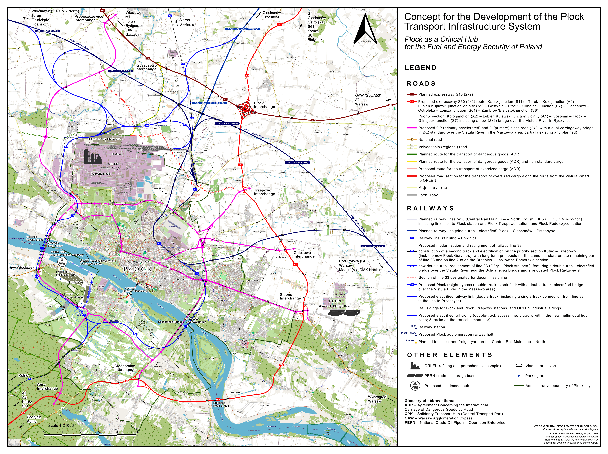

INTEGRATED TRANSPORT MASTER PLAN
FOR PŁOCK
Mitigating Critical Systemic Risks
and Building Logistics Resilience
in the Feedstock Heart of Poland
EXECUTIVE SUMMARY
Eliminating Single Point of Failure (SPoF) Risks in the Feedstock Heart of Poland
The subject of this study is to demonstrate the urgent need for a comprehensive reconfiguration of the transport infrastructure of Płock – an agglomeration that constitutes the absolute foundation and geostrategic keystone of the fuel, energy, and defence security of the Republic of Poland. The current transport network poses significant risks to the continuity of state functions due to the absence of grade-separated connections between critical infrastructure and the expressway network, as well as the inadequacy of the railway network for bulk cargo transport and passenger services.
The Płock agglomeration concentrates the country's key critical infrastructure (ORLEN S.A. and PERN S.A.), while remaining a transport island without adequate road and rail connections. In the face of hybrid threats, the current layout generates a critical 'single point of failure' (SPoF) risk.
Achieving full logistical and economic resilience of this key industrial hub requires the parallel implementation of an integrated package of infrastructural solutions, based on the pillars listed below.
INTEGRATED INVESTMENT PACKAGE (MASTER PLAN FOR PŁOCK):
NATIONAL ROAD PILLAR: Express Road S60 (2x2): Koło junction (A2) – Lubień Kujawski junction vicinity (A1) – Gostynin – Płock – Glinojeck junction (S7) with a new bridge (2x2) over the Vistula River in Rydzyno, compliant with military load classification MLC 150 / STANAG.
LOCAL ROAD PILLAR: City Ring Road (2x2) with a new bridge (2x2) in Maszewo compliant with military load classification MLC 150 / STANAG for the segregation of ADR transport, an internal east–west city corridor (2x2), access roads (2x2) connecting the City Ring Road with expressways (the planned S10 and proposed S60), as well as single-carriageway logistics and transport roads serving the ORLEN industrial complex directly.
RAILWAY FREIGHT PILLAR: Płock Freight Bypass (double-track, electrified) routing RID transport away from residential areas with a new double-track bridge in the Maszewo region, supplemented by railway links integrating the bypass with planned routes (the CMK-North trunk line and the Płock – Ciechanów – Przasnysz Railway Line) and the existing railway Line 33 (Polish: linia kolejowa nr 33, LK 33).
PASSENGER-EMERGENCY RAILWAY PILLAR: Construction of a second track on the electrified section of Line 33 between Kutno and Trzepowo, a new double-track alignment of Line 33 in Płock on the Góry – Płock station section with a new double-track railway bridge in the vicinity of the Solidarności Bridge (Polish: Most Solidarności), as well as a grade-separated triangular junction on the border of the left-bank Płock districts of Radziwie and Góry, along with the relocation of Płock Radziwie station and the commissioning of the new Płock Góry station.
INTERMODAL COMPONENT – MULTIMODAL HUB: A river-rail-road port on the Włocławek Reservoir.
The investments presented in the master plan aim to overcome the region's transport peripherality and fully integrate Płock into the national logistics system (the entire network of connections is shown in Figure 1).
The key element in the road component is the high-priority section: Koło junction (A2) – Lubień Kujawski junction vicinity (A1) – Gostynin – Płock – Glinojeck junction (S7). The proposed route is an integral part of a broader, macro-regional express road corridor along the Kalisz – Zambrów axis (Figure 2), the implementation of which will geometrically increase the transport resilience of central Poland.
In the railway component, the master plan emphasises the construction of a second track and the full electrification of Line 33 on the Kutno – Trzepowo section, as a key link in the North–South Railway Strategic Axis (Zgierz – Kutno – Płock – Grudziądz – Laskowice Pomorskie), illustrated in Figure 3. In order to fully exploit the potential of this corridor, it is essential to take action at the governmental level to include the further modernisation of the entire Line 33 north of the Trzepowo station (construction of a second track and electrification) and Line 208 on the Brodnica – Laskowice Pomorskie section in national investment plans. This action should become an element of the complementary plans of the national infrastructure manager (PKP Polskie Linie Kolejowe S.A.).
The condition for achieving a synergy effect is the systemic and continuous adaptation of the technical parameters of the public transport network to the dynamically changing feedstock and technological needs generated by strategic industrial plants in Płock.
Roads: Construction of the internal City Ring Road of Płock with a dual-carriageway (2x2) bridge in Maszewo (military load class MLC 150 / STANAG, ADR segregation), completion of the east–west corridor, commencement of access roads on the City Ring Road – expressways (S10 and S60) route, and logistics-transport corridors around the ORLEN production plant.
Rail: Construction of the double-track Płock Freight Bypass along with a new freight-military bridge over the Vistula River in Maszewo and a link to Line 33, and the commissioning of the new Płock Góry station on Line 33.
Phase II: Strategic Integration (Years 2030–2034) – Overcoming the Vistula Barrier and Connecting to the National Network
Roads: Construction of the strategic section of the S60 Expressway: Koło junction (A2) – Lubień Kujawski junction vicinity (A1) – Gostynin – Płock – Glinojeck junction (S7) with a new dual carriageway (2x2) bridge in Rydzyno (military load class MLC 150 / STANAG), and finalisation of access roads on the City Ring Road – expressway route and logistics-transport corridors in the region of the ORLEN industrial complex.
Rail: Construction of a second track and electrification of Line 33 on the Kutno – Trzepowo route, a new passenger-emergency alignment of the line across the Vistula via a new bridge in the vicinity of the Solidarności Bridge with a grade-separated triangular junction on the border of Radziwie and Góry, and the Płock Radziwie station in its new location.
Phase III: Full Synergy and Decarbonisation (Years 2034–2037) – Multimodal Ring
Rail: Launch of the Płock Urban Fast Rail (SKM), construction of grade-separated crossings and links integrating the freight bypass with the CMK-North line and the route to Przasnysz.
Multimodal Hub: Construction of a river-rail-road port (Multimodal Hub) on the Włocławek Reservoir.
The timely implementation of the indicated implementation phases is the foundation for achieving multi-level benefits, crucial both for the development of the Płock region and for the stability of the entire country.
STRATEGIC BENEFITS FOR THE COUNTRY:
FEEDSTOCK SECURITY: Full logistical redundancy for ORLEN and PERN (elimination of the risk of state paralysis).
DEFENCE RESILIENCE (dual-use): Adaptation of transport corridors to NATO requirements (bridges compliant with military load class MLC 150 / STANAG), enabling rapid troop deployment along the eastern flank of the alliance.
MODERN ECONOMY (high-tech, IT): Breaking transport isolation as an impulse to attract strategic investments from the high-tech sector, data centres, and Industry 4.0, powered by clean energy from the Płock energy transition hub.
FINANCIAL BENEFITS (ROI): Billions in revenue to the state budget from customs duties and fuel taxes exceeding the investment outlays.
The estimated CapEx is PLN 17.4–21.8 billion for the years 2026–2036. Integrated investments in the Płock region meet the criteria for dual-use infrastructure, qualifying for immediate co-financing from the EU's CEF Transport – Military Mobility programme and national defence funds.
The implementation of the integrated master plan for Płock is the key to building uncompromising resilience and full logistical redundancy in the region of the country's key strategic plants. The new axis of the S60 Expressway will become the central element of this system, permanently breaking the existing transport isolation of the region and guaranteeing secure freight distribution flows. The scale and interdisciplinary nature of the project require the urgent establishment of a dedicated inter-ministerial team under the Council of Ministers, capable of coordinating the actions of government bodies, state-owned enterprises, and local governments. The implementation of these priority investments will eliminate the critical risk of paralysis of critical infrastructure, forming the foundation for the long-term energy, feedstock, and defence security of the Republic of Poland.
🔗 Link to the master plan has been copied to clipboard!
1. INTRODUCTION AND THE ESSENCE OF STRATEGIC ISSUES
Contemporary geopolitical challenges, escalating hybrid threats, and NATO military mobility requirements necessitate an immediate review of Poland's transport map in the region of its most important refining, petrochemical, and hydrogen hub – Płock. The paramount objective of the state must be to ensure the operational and defensive continuity of the Płock plants, which form the heart of the country's fuel supply. Despite such a fundamental role, years of systemic neglect have led to a situation where the city remains a transport island.
Hitherto isolated central plans – including the expansion of the S10 road, which bypasses the city far to the north, and routine modernisations of national routes to class GP standard – do not eliminate systemic risks. Such a layout completely deprives Płock of the chance to form even a partial orbital ring road. This represents a critical threat in crisis situations, drastically limiting the mobility of emergency services and preventing the efficient evacuation of the population from threatened zones of the agglomeration.
In this situation, a multi-pronged approach is necessary. The structural reconfiguration of the railway network, the expansion of the integrated City Ring Road, and the introduction of the S60 Expressway as one of the main pillars of the national network are interdependent projects (Figure 1). These actions must be implemented through the coordinated cooperation of central ministries (Ministry of National Defence, Ministry of Infrastructure, Ministry of State Assets), local governments, and state-owned enterprises.
The presented document has the character of a framework, community-driven master plan. As a directional framework, it focuses on the strategic essence – the definition of transport corridors, risk mitigation and systemic integration. Secondary detailed analyses have been deliberately omitted, leaving detailed traffic modelling and microscopic construction designs to the competence of the relevant local and government authorities.
2. SECURITY LANDSCAPE: STRATEGIC FUNCTION OF PŁOCK AND RISK IDENTIFICATION
2.1. Extraordinary Concentration of Critical Infrastructure and Requirement for Technical Flexibility
The Płock agglomeration has a unique concentration in Europe of upper-tier and lower-tier establishments with a high risk of major industrial accidents (in accordance with the SEVESO III Directive). The ORLEN production complex and the PERN feedstock storage and logistics base are responsible for the continuity of fuel supplies to the economy and the Polish Armed Forces. This centralised critical infrastructure is currently in a logistical deadlock – the transport of refined products and feedstocks relies on conflicting, narrow single-carriageway roads and railway lines cutting through the middle of residential areas.
In this context, treating transport and feedstock infrastructure as static is a fundamental planning error. There is a critical necessity to legally and spatially sanction the principle of continuous, mutual adaptation of public transport corridors and underground pipeline networks. Contemporary engineering allows for the complete elimination of spatial conflicts – where projected roads and tracks closely approach existing pipeline corridors, industrial plants gain the ability to flexibly manage their infrastructure. By utilising advanced trenchless methods (e.g., horizontal directional drilling – HDD), transmission routes can be adaptively and seamlessly relocated in a manner that is completely non-invasive to newly established arteries. The technological coordination of these actions ensures that underground pipelines cease to be a planning barrier, instead becoming an element of an integrated logistics system. The same principle of spatial flexibility applies to overhead extra-high-voltage power lines, which can be seamlessly integrated into new transport corridors through modern underground cabling techniques or by increasing pylon heights.
In summary: maintaining the transport status quo around the Płock industrial hub creates a critical systemic risk, directly undermining the foundations of civil security and the defence capabilities of the Republic of Poland. The rapid technological, feedstock, and production development of the refining and petrochemical complex, combined with an obsolete, inadequate, and conflicting transport network, will inevitably breach public safety thresholds. In the event of a major industrial accident, an act of sabotage, or an escalation of a hybrid conflict, the lack of segregated freight routes and independent strategic corridors will pose a catastrophic threat to human life, public health, and the urban structure of Płock. In the military dimension, maintaining the current state of infrastructure paralyses the mobility of Allied NATO forces and the Polish Army (the military mobility doctrine), cutting off the armed forces from their primary, central source of fuel and energy supply. The cost of inaction in modernisation is no longer merely economic losses, but a real risk of destabilising the country's defence system and losing operational capabilities on the eastern flank.
2.2. Energy Transition and Hydrogen Logistics Hub
The justification for the immediate expansion of the transport system takes on a modern technological dimension. Płock, as the heart of the Mazovian Hydrogen Valley, has already launched hydrogen purification facilities and is becoming the main distribution hub for green hydrogen for heavy transport in Poland. The transport of hydrogen in high-pressure tube-trailers (350–500 bar) presents major challenges in terms of counter-terrorism prevention and emergency response. Conducting such transport via old national roads (DK60/DK62) generates a serious risk of accidents and sabotage. Safe, grade-separated infrastructure isolated from cities is essential for distributing this next-generation fuel to strategic consumers.
2.3. Risk Analysis and the Cost of Inaction
Maintaining the current transport anachronism around critical infrastructure generates three fundamental risks:
Military and Sabotage Threat: The greatest risk is not the physical destruction of installations by missiles, but the logistical 'starvation' of the refinery. If an adversary blocks the old, single-carriageway DK60 road or the single-track railway line with a single disabled vehicle, the entire supply and distribution of fuels for the military is paralysed.
Lost Economic Opportunities: High-tech industries, such as the IT sector (including modern data centres), the chemical industry, and the hydrogen sector, seek locations with a stable, zero-emission power source like the one Płock offers. These companies forgo investing in the vicinity of Płock solely due to the transport barrier, resulting in a massive loss for the national economy.
Destructive Financial and Planning Consequences: Permanently postponing crucial investments in the express road network and double-track railway lines generates a skyrocketing increase in the costs of their future implementation. The lack of definitive, central decisions regarding the reservation of transport corridors results in highly inconsistent spatial policies within the Płock agglomeration and in adjacent municipalities. In zones where the state's strategic logistical bypasses should run, chaotic suburbanisation and commercial-residential development are progressing. Every year of delay irreversibly shrinks land reserves, dooms the region to urban paralysis, and will force the State Treasury to pay exponentially higher expropriation compensation when construction inevitably begins, while generating massive and justified social protests. Decision-makers must categorically realise that the postulated transport infrastructure, along with the dynamic technological and production growth of industry in Płock, will have to be built in the future regardless. Attempting to ignore this fact will not halt the growth in freight volume; it will merely drastically inflate the final cost of investments that the Polish state will eventually be forced to implement under the pressure of a capacity crisis.

Figure 1.General concept of the integrated transport system layout in Płock
Płock boasts a unique geographical location – it lies in close proximity to the country's central road and rail hub, Port Polska in Baranów, and the Warsaw and Łódź agglomerations. Its location on the Vistula River, part of the E40 international waterway, creates ideal conditions for building a modern, intermodal Multimodal Hub in Płock. This investment will take the form of an advanced river-rail-road port, located directly on the Włocławek Reservoir. The new complex will integrate the mass cargo flows and hydrogen logistics of strategic state-owned enterprises (ORLEN, PERN), including a dedicated storage zone for containerised and break-bulk cargo, though with the deliberate exclusion of long-term liquid fuel storage installations.
This perspective gains critical importance in the context of the government's Port Polska programme, which includes the construction of the central hub in Baranów (located approximately 80 km from Płock) and the significant expansion of Modlin Airport. The proposed Płock Multimodal Hub is envisaged as a strategic, bi-directional consolidation hub. It provides direct passenger-charter integration with Warsaw-Modlin Airport via the planned Line 247, while opening a grade-separated corridor for mass freight flows directed via the Płock Freight Bypass to the south, straight to the main logistics hub in Baranów. Furthermore, the high hydrological parameters of the Włocławek Reservoir guarantee a significantly extended navigation season and stable draught depths for heavy freight, allowing it to pre-emptively absorb logistical pressure and drastically reduce exhaust emissions from road transport in the spirit of modern climate policy.
The Multimodal Hub will be integrated with a new double-track and electrified access route from the Płock Freight Bypass, equipped with a grade-separated, double-track switch junction at the connection to the main line. The project includes the implementation of an ecological marshalling and manoeuvring yard with a track length of 750 metres, featuring a layout of 8 station tracks fully electrified via an automated retractable catenary system, supplemented by a dedicated, electrified 4-track manoeuvring bundle for reversing train sets. All loading tracks are served by automated, electric RMG gantry cranes. The green infrastructure includes a cargo pier adapted to class IV waterway parameters, featuring a complex of three railway tracks embedded in a paved surface, also covered by the retractable catenary system, and an independent road pier with enhanced structural load capacity, dedicated to heavy road transport, oversized vehicles, and out-of-gauge cargo, including process equipment and components for the ORLEN production complex, as well as dangerous goods (classified in accordance with the ADR and RID agreements).
The projected hub will ultimately replace and expand the functionality of the existing temporary transshipment infrastructure (including the Petrochemia Wharf), transforming a temporary offloading point for large-scale apparatus into a permanent, integrated transport hub of national and international significance, meeting class IV waterway requirements (Figure 1).
2.5. Geopolitical Risk Asymmetry and the Need for Multi-Area Emergency Support
The Płock agglomeration is characterised by a unique structural specificity in Europe. In contrast to Western European countries, where refining and transmission infrastructure is highly decentralised and geographically dispersed, Poland's energy security system – shaped in a bygone geopolitical era – exhibits an extremely high percentage dependence on a single industrial centre. The concentration of the dominant volume of national fuel production in the Płock refinery, combined with its function as an international hub for the PERN pipeline networks, creates a phenomenon of critical risk asymmetry.
In the face of this defined threat structure, a key element of the state's defensive and preventive strategy must be to ensure the highest capacity of transport corridors and a radical reduction in travel time to Płock for external emergency forces. The scale of a potential incident involving a major industrial accident, an act of sabotage, or a hybrid attack in the region of such a massive production complex by definition exceeds the autonomous response capabilities of the region. Emergency, relief, and preventive operations will require the immediate, mass deployment of specialised technical, medical, and firefighting units from many distant regions of the country.
Consequently, the current collapse of road and rail infrastructure around Płock ceases to be a local problem. It is a critical bottleneck that, under crisis conditions, not only paralyses the central feedstock and energy hub but also directly destabilises the feedstock security of the entire Republic of Poland, the refining industry of parts of Germany, and – fundamentally in the context of contemporary asymmetric threats – the operational and logistical capabilities of the entire eastern flank of NATO.
It is worth emphasising categorically that planned investments in Allied NATO transmission infrastructure (fuel pipeline systems on the eastern flank) will not alleviate these operational risks. Military pipelines, due to their unidirectional supply specificity and assortment constraints, constitute only a component of the logistics system, whose physical origin and production point remains the Płock feedstock and energy hub. Furthermore, under full-scale conflict or asymmetric warfare conditions, underground transmission lines are highly vulnerable to acts of sabotage and cyberattacks on control infrastructure (pumping stations). In accordance with NATO's logistical diversification doctrine, if a pipeline is compromised, the burden of immediate military supply must be absorbed by mass road transport (ADR technical corridors) and rail transport (RID train sets). Without the radical expansion of the S60 Expressway and the construction of a second carriageway from the Trzepowo junction, the country's defence system deprives itself of a logistical bypass, leaving the Alliance's eastern flank without real security in the event of the underground network becoming immobilised.
The planned bridge crossings in the Płock region (Rydzyno and Maszewo) are deliberately designed to meet the highest, extraordinary military load classification MLC 150 in accordance with STANAG 2021. This will not only allow for the secure, parallel, and bi-directional deployment of columns of NATO's heaviest tracked vehicles (simultaneous MLC 70/100 movement on both carriageways), but will also fully secure dual-use logistics for transporting critical oversized and non-standard cargo for the ORLEN refining and petrochemical complex.
2.6. Płock as a Multi-Domain Geostrategic Keystone (Centre of Gravity): Justification for Crossing Redundancy
Płock cannot be analysed solely through the lens of standard urban or demographic criteria applied to other cities. In geo-economic and military terms, this centre functions as a unique gravitational centre for the fuel and energy security of the Republic and the entire eastern flank of NATO. The accumulation within a single geographical area of the largest refining and petrochemical complex (ORLEN) in the region, key crude oil and petroleum product transmission trunk lines of PERN, and planned hydrogen logistics hubs makes Płock a key critical point in the state's resilience system.
The Vistula River fits into this unique characteristic, playing a multi-dimensional role in the Płock region. On the one hand, it constitutes an integral component of the E40 International Waterway, meaning a natural inland logistics highway with immense commercial potential. On the other hand – in a purely defensive and operational dimension – the river is a formidable hydrographic barrier dividing the same geopolitical space into two distinct banks. This dual nature of the Vistula generates an absolute engineering requirement: connecting both banks of the river in a manner that guarantees the continuity of state functions under extreme crisis conditions.
For this reason, the postulated construction of a network of fully dual-carriageway national and city roads, alongside double-track, electrified railway lines, does not stem from local transport needs, but from the doctrine of strategic redundancy. Single lanes or single-track routes represent an easy target for diversionary, hybrid, or kinetic actions, creating critical bottlenecks (single points of failure). A dual-carriageway (2x2) cross-section on the bridges in Maszewo and Rydzyno, combined with a double-track standard for railway crossings on the Płock Freight Bypass and the new passenger-emergency route, is the only way to physically isolate freight flows, secure civilian evacuation routes, and simultaneously maintain full, uncompromising mobility for NATO forces.
The importance of the Płock industrial hub obliges government administration bodies to completely abandon an archaic, siloed approach to spatial and ministerial planning. All analyses, designs, and their subsequent implementation must be conducted in a fully integrated manner, combining the competencies of the ministries responsible for infrastructure, state assets, and defence. These investments require an uncompromising engineering approach – they cannot be the result of halfway budgetary compromises. Their overriding goal is to protect civilian life and health, as well as to guarantee operational continuity for the Armed Forces of the Republic of Poland and Allied troops, for whom the Płock hub constitutes a critical, central logistical rear base.
3. ROAD INFRASTRUCTURE: EVACUATION SYSTEMS AND THE ROLE OF THE S60 EXPRESSWAY
3.1. Elimination of the Single Point of Failure (SPoF)
The current road network highly centralises traffic at the Łódź Północ (Stryków) junction and on the section of the A2 motorway towards Warsaw. In the coming years, this region will be critically burdened by a skyrocketing growth in transport flows generated by the construction and commissioning of the Port Polska mega-hub in Baranów. The plans currently being pushed to routinely widen existing motorways contradict basic engineering and planning knowledge. International experience clearly proves that increasing the number of lanes on congested routes does not lead to permanent relief, but instead triggers the phenomenon of induced traffic, which ultimately further amplifies transport congestion.
Under crisis conditions, the paralysis of the Stryków junction freezes transport across central Poland. The proposed S60 route (Kalisz – Płock – Zambrów) serves as a key remedial element in this system (Figure 2). It creates a geometric alternative and a powerful, independent strategic corridor that diverts international and airport transit away from the Warsaw – Łódź axis before it reaches the congested centre, effectively dispersing operational risk.
The implementation of the Łódź Południe junction and the S12 and S8 routes on the southern outskirts of Łódź – while fully justified for serving other macro-regions – does not resolve the structural problems of central Poland in relation to northern Mazovia, as these investments in many dimensions still operate within the highly congested Łódź – Warsaw and Silesia – Warsaw routes. In the face of the launch of the Port Polska mega-hub in Baranów, this will lead to a catastrophic accumulation of transport gridlocks on existing access routes. Only the S60 Express Road, as a completely independent, northern horizontal corridor, allows for the physical diversion of mass transit outside this critical area, guaranteeing real dispersion of strategic and defence risk for the state and relieving the central network before it reaches critical points.
The priority section of the expressway proposed for Płock on the Koło junction (A2) – junction in the region of Lubień Kujawski (A1) – Gostynin – Płock – Glinojeck junction (S7) section constitutes an integral element of the proposed macro-regional transport corridor along the Kalisz – Płock – Zambrów axis (Figure 2), the implementation of which will geometrically increase the transport resilience of central Poland. It is indicated that without the implementation of the remaining sections of this route (Kalisz – Koło and Glinojeck – Zambrów), the Płock section will lose its intended transit and transversal character, generating a risk of local traffic surges. It must simultaneously be reserved that the preparation and implementation of sections located outside the functional area of the city of Płock lies within the exclusive competence of government administration bodies and the General Directorate for National Roads and Motorways (GDDKiA), and this study defines them as a crucial and indispensable external condition.
3.2. Connection via 2x2 Roads with the A1 and A2 Motorways and the Strategic Role of the Glinojeck Junction
Płock currently remains one of the largest and most important industrial centres in Central Europe that is completely cut off from the expressway network (motorways and expressways). This situation generates massive logistical and environmental costs, forcing the transit of thousands of heavy transport rigs and tankers carrying dangerous substances (ADR) along conflicting, single-carriageway national and regional roads (including DK60 and DK62).
The construction of the S60 Expressway on the Koło junction (A2) – Lubień Kujawski junction vicinity (A1) – Gostynin – Płock – Glinojeck junction (S7) section in a dual carriageway (2x2) standard, along with a new dual carriageway (2x2) bridge over the Vistula at the height of Rydzyno near Płock, represents a key element in eliminating this structural anomaly. The implementation of this corridor provides a threefold logistical-defence synergy:
Direct Connection to the North-South Axis (Glinojeck / S7 junction): Connecting Płock with the Glinojeck junction on the S7 expressway opens up immediate, grade-separated access to main national arteries. In the northern direction, this ensures the smooth and secure transport of refined and petrochemical products to the seaports of Gdańsk and Gdynia. In the south–eastern direction, it guarantees a fast connection to the Warsaw agglomeration.
Western and Southern Distribution (Kutno / Koło / A1 and A2): Routing the S60 route south-west towards Koło (via integrated links along the Kutno – Gostynin axis) allows for a direct and grade-separated connection of the Płock hub with the A2 motorway (Łódź – Poznań – Berlin) and the A1 motorway (Gdańsk/Ports – Łódź – Silesia). This is a crucial solution for mass freight transport, relieving the existing, congested network of national and regional roads and drastically shortening delivery times for raw materials and finished products.
Northern Logistics-Transport Corridors and Network Resilience: Thanks to the S60 route, a network of alternative logistics-transport corridors will be established around Płock. In the event of a blockade, breakdown, or acts of sabotage on one of the key arteries of central Poland, the Koło junction (A2) – junction in the region of Lubień Kujawski (A1) – Gostynin – Płock – Glinojeck junction (S7) section allows for the immediate redirection of strategic flows of cargo and chemical tankers via the newly created lanes of the expressway. This prevents a logistical and operational standstill across the entire region.
From the perspective of transport engineering and crisis management, this section is not merely an investment of a local or regional nature. It constitutes a crucial link connecting the motorway network of western Poland with the key S7 express corridor, creating a new, safe, and highly efficient transversal transport axis for the country.
The logistical structure of the Płock agglomeration, in terms of security and transport, must rely on four independent, mutually reinforcing road systems:
City Ring Road as an Internal Emergency-Evacuation Bypass (2x2): A high-priority task within the city's urban structure is to consolidate the existing dual carriageway (2x2) sections into an uninterrupted Class GP sequence, creating a complete internal bypass for Płock. In the event of a major industrial accident, a sabotage attack, or a hybrid threat, the wide profile of this artery ensures critical capacity. It guarantees the safe, mass evacuation of the civilian population from danger zones, while leaving a clear, secure lane for the efficient influx of external emergency forces, medical units, and deploying military columns.
The key element completing this strategic layout will be the construction of a new, dual-carriageway (2x2) bridge over the Vistula River at the point of Maszewo (military load class MLC 150 / STANAG, ADR segregation), which will ensure continuity of the evacuation corridor and an isolated route for transporting dangerous goods (ADR) exiting the ORLEN complex.
Internal City Emergency-Evacuation Corridor on the East–West Axis (2x2): Within Płock's urban structure, a key task is to fully close and consolidate the existing dual-carriageway (2x2) sections of city arteries on the east–west axis into a single coherent and uninterrupted class GP and G transport corridor. This requires the construction of a second carriageway along Ignacy Łukasiewicz Street, together with the implementation of a second, parallel span of the Płockiego Czerwca 1976 r. Bridge (Polish: (Most Płockiego Czerwca 1976 r.), featuring two traffic lanes across the Brzeźnica River. Under critical conditions – such as a technological disaster, an incident of a diversionary nature, or an escalation of hybrid actions – this artery will assume the function of the primary vector for outward vehicle flows from heavily urbanised zones of Płock to secure relocation areas. The architecture of this route eliminates the risk of transport paralysis and gridlocks, enabling grade-separated dispersion of the civilian population. Simultaneously, maintaining a dedicated lane remains a tactical priority, indispensable for the rapid entry of support from the outside: emergency teams, medical convoys, and deploying components of the Polish Armed Forces.
Access Roads Connecting the City Ring Road with High-Speed Routes (S10 and S60) in a 2x2 Standard: The essence of this layout lies in the dual-carriageway (2x2) class GP access roads radiating from the City Ring Road, directing city, freight, evacuation-emergency, and operational traffic for the armed forces directly to external junctions on express roads and the national network in all directions.
Local logistics-transport corridors for ADR transport and industrial infrastructure: A completely separate function in the security system is performed by a network of single-carriageway logistics-transport roads located on the northern side of the ORLEN production complex. These routes, radiating directly from the factory gates in various directions towards external junctions of high-speed roads, constitute specialised freight arteries. Their sole task is to immediately capture and safely route flows of dangerous goods (ADR) from refinery sites onto the network of national and express roads. Isolating this specific, heaviest traffic on the northern side of the plant allows for its complete decoupling from the city's internal residential zones and eliminates any risk of conflict with civilian evacuation traffic. This system operates in full synergy with a new, dedicated section of a single-carriageway logistics-transport road approximately 1.5 kilometres in length, located on the south–western side of the plant, constituting an alternative alignment on the section between the transshipment terminal on the Vistula and the ORLEN production plant, necessitated by postulated transport solutions in this area of the city. This section, which constitutes an engineered corridor with extreme subgrade load-bearing capacity, will connect the Vistula bank (the Petrochemical Wharf transshipment terminal) directly with the factory gates, providing an unrivalled and isolated route for the overland transport of oversized and non-standard cargo.
3.3. Overcoming the Vistula Barrier in Płock and Countering Critics' Objections
The right-bank, industrial Płock is cut off from the left bank of the river by the Vistula, which, in light of threats from Russia, necessitates the construction of new, fortified crossings precisely here, rather than dozens of kilometres away. Government planners raise the criticism that routing the expressway near Płock creates a 'co-located target' (refinery + junction) for an enemy attack. However, this criticism is based on outdated planning assumptions. The refining and petrochemical complex in Płock is already a top-priority strategic objective. The lack of modern transport infrastructure in its immediate vicinity does not reduce the risk of attack; it merely drastically lowers the country's defensive, emergency response, and logistical capabilities in a crisis situation. The new crossing over the Vistula and the S60 route in the Płock region do not generate additional threats – they disperse that threat, eliminating the existing, critical transport bottleneck and giving the Polish Armed Forces and emergency services indispensable operational flexibility. Such a line of thinking is an error from the perspective of NATO defensive tactics:
The location of the ORLEN industrial complex in Płock is perfectly known via satellite: narrow roads will not hide the plant from adversary reconnaissance.
An express road (2x2) provides flexibility: after damage to one lane, traffic can still proceed via the emergency lane or the adjacent carriageway.
A wide route outside urbanised terrain: creates ideal manoeuvring positions for mobile air and missile defence systems (e.g., Patriot, Mała Narew), which must protect the skies over the refinery.
Countering asymmetric threats (drones): experiences from new-generation conflicts prove that dense urban development impedes the detection and engagement of unmanned aerial vehicles (radar errors, shrapnel risks). The open corridors of express routes and the City Ring Road provide an excellent operating base for mobile anti-drone systems (C-UAS) and electronic warfare (EW) systems, which can operate freely on the refinery's flanks and dynamically change positions.
Consequently, the construction of two dual carriageway road crossings over the Vistula is necessary:
A bridge in a dual-carriageway (2x2) standard over the Vistula within the City Ring Road at the height of Maszewo: The bridge, compliant with military load class MLC 150 / STANAG for ADR transport, will provide a dedicated evacuation route and an isolated corridor for transporting dangerous goods (ADR) from the ORLEN complex.
A dual-carriageway (2x2) express bridge over the Vistula within the S60 road at the height of Rydzyno near Płock: The new, fortified crossing with the highest military-engineering parameters (STANAG class 150, MLC 70/100 load), located outside the centre, will form a 'lifeline' for rapid reaction forces directed towards the refinery from the south–western direction, bypassing Płock from the east and heading towards the north–eastern borders of the country.
3.4. Alignment through the Gostynin-Włocławek Landscape Park
The construction of the proposed S60 route along the optimal, grade-separated alignment necessitates traversing a peripheral section of the Gostynin-Włocławek Landscape Park. Implementing this solution is entirely devoid of any real spatial alternatives. It is an absolute priority for ensuring the efficient evacuation of the population from the left bank (southern) and remaining districts of Płock, guaranteeing direct access to a high-capacity trunk road that channels vehicle flows out of the potential hazard area. Simultaneously, this alignment dictates uncompromising military mobility, enabling – in sudden, crisis situations and under conditions of immediate hybrid threats – rapid and protected transport of armed forces from the left bank of the Vistula directly into the region of the strategic refining and petrochemical complex.
3.4.1. Strategy for Minimising the Ecological Footprint and Environmental Compensation in the GWLP Corridor
Awareness of the S60 route traversing a peripheral fragment of the Gostynin-Włocławek Landscape Park imposes an obligation on designers to apply above-standard biosphere protection measures. To prevent the proposed defence corridor from becoming a barrier to animal migration corridors, the technical design must be based on the 'green tunnel' doctrine. Within the framework of the investment, the following are envisaged:
The construction of large-scale overpasses for animals (ecoducts) with a minimum width of 60 metres, located at the sites of traditional migration routes of large mammals (deer, wild boars).
The use of viaducts instead of traditional embankments on key, waterlogged valley sections, which will maintain full hydrological continuity and the free flow of groundwater and surface waters.
The installation of 24-hour guidance systems featuring low-intensity lighting, alongside noise and anti-glare screens with enhanced damping parameters (next-generation absorbing panels), minimising habitat fragmentation for birds and bats.
As part of environmental compensation (in accordance with Article 75 of the Environmental Protection Act), it is postulated that the investor finance a restorative afforestation programme on lands adjacent to the park over an area three times larger than the terrain occupied by road construction, as well as modernise the tourist-educational infrastructure of the GWLP. Thanks to this, the realisation of the military and emergency objective will be integrated with enhancing the ecological resilience of the entire forest complex.
4. RAILWAY INFRASTRUCTURE: FREIGHT BYPASS AND PASSENGER TRUNK HUB
4.1. Płock Freight Bypass and Rejection of the Suburban Variant
Meeting public safety requirements and SEVESO III regulations necessitates the immediate removal of heavy freight trains carrying dangerous substances (in accordance with regulations) from the city's densely populated residential zone to its outskirts.
Criticism of the Variant through the Stara Biała Municipality: The previously proposed route through Maszewo Duże, Mańkowo, Wyszyna, and Stara Biała drastically damages a rapidly expanding, suburban zone of the agglomeration. This area serves as a functional urban rear base. Introducing heavy chemical train movements there will trigger urban chaos and devastate investment opportunities for a region that is already losing residents to the suburban zone.
Compromise Variant: The freight rail route should be aligned through sparsely populated areas directly along the western administrative boundary of the city, in the region of Maszewo and the Winiary district.
The geometry of the western variant of the Płock Freight Bypass, assuming its alignment at an optimal distance of approximately 500 metres from the western boundary of the ORLEN production complex, represents a well-considered spatial and security compromise. This location, on the one hand, protects the dynamically developing suburban zone from urban chaos, and on the other, creates a critical security buffer preventing so-called cascading failures (domino effects). Contemporary engineering standards in Western European chemical hubs rely on an island (modular) structure – strategic transport infrastructure must share space with the industrial complex, serving as its direct logistical and emergency rear base rather than a developmental barrier. This distance guarantees the full operational continuity of the refinery under crisis conditions, while leaving the indispensable land reserve for the corporation's projected western structural investments.
4.2. Trunk Link and New Railway Crossings
The new railway layout of the agglomeration must be integrated into the national and international network by:
The construction of a new double-track railway bridge in the western districts of Płock along the Płock Freight Bypass: The alignment of the new bridge crossing is characterised by an increased longitudinal gradient, stemming directly from the geomorphological asymmetry of the Vistula valley and the necessity to overcome a significant elevation difference between its banks (the high Płock escarpmentand the low-lying flood terrace of the left bank). In terms of railway traffic engineering, this feature does not constitute an operational barrier. The longitudinal profile of the route exhibits full synergy with the primary freight flow: the track gradient favours the direction of outward transport of mass, fully loaded RID tanker sets from the refinery to the south of the country. Conversely, lighter return trains (with empty wagons) will overcome the projected incline without difficulty, fully balancing the energetic and operational characteristics of the line. This effect is further amplified by rapid technological progress in the rolling stock industry; contemporary six-axle freight locomotives equipped with digital anti-slip systems and the option to employ multiple traction entirely eliminate former operational constraints on elevated longitudinal profiles.
Crucially in a social-spatial dimension, this specific western variant of the bridge and Freight Bypass routing eliminates key localisation conflicts. In contrast to previous, flawed concepts, the new line completely bypasses and does not bisect dense settlement structures and villages in the Stara Biała municipality. This solution permanently protects the territorial integrity of adjacent communities, drastically reduces any potential expropriation costs, and eliminates the risk of social protests that could block this investment, which is critical for state security, for decades.
The construction of a second track and the electrification of Line 33 on the Kutno – Trzepowo section (terminating in the vicinity of the planned junction with the CMK-North trunk line in Trzepowo – at the connection point of the postulated double-track link to Line 33, integrating this line with the Płock Freight Bypass, as illustrated in Figure 1) with a new, double-track railway crossing over the Vistula in the vicinity of the Solidarności Bridge, which requires shifting Line 33 to a new alignment approximately 10 kilometres in length along with the bridge crossing itself. The implementation of this strategic corridor on the left bank of the Vistula is directly linked to the construction of the new Płock Radziwie station in a new location within the railway ring structure, as well as the opening of the new Płock Góry station, which serves as a key passenger node on the approach to the hub from the Kutno direction. The new crossing is primarily intended to serve passenger traffic, creating a grade-separated and efficient passenger corridor that will relieve the central part of the city. This modern bridge will be a crucial infrastructural element enabling the smooth operation of trains turning south in Płock from the newly planned CMK-North trunk line within the north-south core corridor, as included in the government document Integrated Railway Network (ZSK), and the main Płock railway station will consequently absorb the leading passenger flows.
At the same time, the new railway bridge will play a strategic role as an emergency crossing for heavy freight traffic from the ORLEN refinery and NATO military transports. In a crisis situation or in the event of an outage on other sections, it will ensure indispensable double-track logistical continuity and connect the left-bank Multimodal Hub with the rest of the country. The currently operated Legionów Józefa Piłsudskiego Bridge (Polish: Most Legionów Józefa Piłsudskiego) has critical technical limitations as a single-track structure. Leaving it as the sole passenger crossing in the face of the planned launch of the new Płock – Ciechanów – Przasnysz Railway Line and the aforementioned flows from CMK-North will lead to complete transport inadequacy of the system, and further overloading of the old facility carries a real risk of structural failure. Both mass flows of heavy freight trains from the ORLEN production plant and passenger trains operated on the north-south axis from CMK-North, Line 33 from the northern direction, and the Płock – Ciechanów – Przasnysz Line southward towards Kutno absolutely require increased capacity through the implementation of the postulated second track on Line 33 on the Kutno – Trzepowo section. The final stage of this modernisation – precisely illustrated on the attached map (Figure 1) – will be the complete decommissioning and dismantling of the obsolete section of Line 33 running across the century-old Legionów Józefa Piłsudskiego Bridge, enabling the definitive removal of heavy train traffic from Płock's strict city centre zone and relieving this ageing engineering structure.
The construction of a double-track railway link connecting the new Płock Freight Bypass directly with the CMK-North trunk line: This is a fully double-track link with bilateral, grade-separated switch junctions. This solution is crucial for the efficient outward transport of mass RID shipments from the ORLEN refinery, the execution of freight transport on the CMK-North – Line 33 axis in the southern direction, and the operation of the proposed Multimodal Hub. This layout is supplemented by the construction of smaller links that will integrate the new bypass infrastructure with the existing Line 33 (via a double-track connection) and with the newly designed line to Przasnysz via a single-track link routed further away from Line 33. This will unlock full capacity for extensive cargo flows in the region while completely bypassing Płock's urbanised centre.
Meanwhile, on the left bank of the Vistula, on the border of the Płock districts of Radziwie and Góry, the implementation of a grade-separated triangular junction connecting the Płock Freight Bypass with the new alignment section of Line 33 will ensure full flexibility for passenger and emergency services and allow for the closure of the railway ring around Płock, opening up the possibility of establishing the Płock Urban Fast Rail (SKM).
The Płock Urban Fast Rail (SKM) Project: The proposed track layout, connecting the western Płock Freight Bypass with the new double-track crossing over the Vistula in the vicinity of the Solidarności Bridge and the existing Line 33, creates a unique opportunity to close a complete railway ring around the agglomeration. This geometry allows for the launch of an ecological, zero-emission Urban Fast Rail (SKM) operating on a closed loop around the city. In an agglomeration with an extraordinary, elevated industrial risk, rail transport independent of the road network represents a fundamental element of civil security – it serves as a strategic evacuation backbone for the population, while securing efficient, daily passenger communication in the spirit of transport decarbonisation policies.
An absolute condition for the efficiency and safety of a system constructed in this way is to ensure the full, grade-separated isolation of railway routes from the road network across the entire territory of Płock. The construction of modern multi-level crossings (flyovers and tunnels) is crucial for eliminating the risk of paralysing city arteries given the high frequency of passenger train operations, and guarantees that railway crossings will not block emergency and evacuation routes in zones covered by SEVESO III Directive requirements (Figure 1).
4.3. North–South Railway Strategic Axis
It is proposed to construct a second track and electrify the freight-passenger corridor with critical infrastructure status on the Zgierz – Płock – Laskowice Pomorskie section (Figure 3). This is a crucial dual-use project, guaranteeing secure fuel logistics for the country (ORLEN), meeting the ecological requirements of the EU Green Deal, and fulfilling NATO's military mobility objectives.
Within the framework of implementing this undertaking, the construction of a second track on the Kutno – Płock route (vicinity of the new junction in Trzepowo) is postulated as the absolute priority of the first stage, which will allow for the immediate elimination of a critical logistical bottleneck and an exponential increase in freight capacity prior to the full implementation of the remaining axis elements. The second stage should encompass the Płock – Sierpc – Brodnica section, finalising the modernisation of Line 33, while the final stage will be the implementation of the postulated task along Line 208 on the Brodnica – Grudziądz – Laskowice Pomorskie section.
The postulated investment regarding the construction of a second track and the full electrification of Line 33 on the Kutno – Trzepowo section (terminating the second track construction in Trzepowo at the connection point of the postulated double-track link to Line 33, integrating this line with the Płock Freight Bypass) constitutes a crucial, initial link of the proposed Railway Strategic Axis North–South on the Zgierz – Kutno – Płock – Grudziądz – Laskowice Pomorskie route. To fully exploit the logistical and throughput potential of this corridor, it is necessary to take coordinated actions at government level. These actions should lead to the inclusion of the complementary modernisation of subsequent sections, i.e., the remaining fragment of Line 33 north of the Trzepowo station and Line 208 on the Brodnica – Laskowice Pomorskie section, in national investment plans. This investment will allow for the adaptation of the technical parameters of the lines to the requirements of long-distance passenger traffic and heavy freight transport (cargo) generated by strategic industrial plants in Płock. It is emphasised that the planning and implementation of these long-distance infrastructure intentions rests with the national infrastructure manager (PKP PLK), to whom this master plan directs a formal investment request.
5. TRANSVERSAL DEFENCE CORRIDOR S12/S60: NATIONAL LOGISTICAL INTEGRATION
A key factor drastically increasing the geopolitical and military significance of the S60 Expressway on the Kalisz junction (S11) – Turek – Koło junction (A2) – Lubień Kujawski junction vicinity (A1) – Gostynin – Płock – Glinojeck junction (S7) – Ciechanów – Ostrołęka – Łomża junction (S61) – Zambrów/Białystok junction (S8) route as one of the main pillars of the national network is its direct operational synergy with the postulated westward and south-westward extension of the S12 expressway (Figure 2). This postulate enjoys strong, unified support from local governments in this part of the country, aiming to break the transport marginalisation of the region. The S60 road, even in its autonomous variant, has a fully independent, parallel defensive character, serving as a crucial manoeuvre axis for Allied NATO forces. However, it is precisely the functional coupling of both these arteries, which converge at a strategic hub near Kalisz and Ostrów Wielkopolski, that creates a unified, grade-separated transversal corridor of the highest defence priority, multiplying operational-logistical capabilities across the entire axis of the alliance's eastern flank.
Connection of Polish Army and NATO Bases: The region of south–western Poland (Lower Silesia, Lubusz Land, Greater Poland) features the highest degree of saturation with strategic military units, training grounds, and logistics centres of the Polish Armed Forces and Allies (e.g., Żagań, Świętoszów). Connecting the proposed S12 with the S60 route opens up the shortest, uncompromised rapid deployment route for these formations towards the north–eastern borders of the country.
The Shortest and Segregated Route: The combined S12/S60 corridor enables the complete bypassing of the highly congested Łódź and Warsaw transport hubs. This guarantees the direct and rapid deployment of heavy military transports from the interior of the country to sensitive border regions: the border with the Kaliningrad region, the Polish–Belarusian border, the Suwałki Gap, and further towards the Baltic states.
Płock as a Strategic Fuel Depot on the Move: Within a transport axis constructed in this way, Płock becomes a crucial, central supply port for operating troops. Mass columns and logistical transports moving from the south-west can refuel and draw conventional and hydrogen fuels directly from the Płock refining and petrochemical complex in a grade-separated and secure manner (isolated from city centres), immediately continuing their march towards the theatre of military operations.
6. INVESTMENT PHASING STRATEGY AND IMPLEMENTATION SCHEDULE
Taking into account the unprecedented scale of the integrated infrastructure package, implementing all facilities within a single time window is impossible from the standpoint of budgetary limits and construction market execution potential. To ensure financial and operational continuity, the investment must be divided into three autonomous, logically linked phases with diversified sources of financing:
Roads: Construction of the internal City Ring Road of Płock with a dual-carriageway (2x2) bridge in Maszewo (military load class MLC 150 / STANAG, ADR segregation), completion of the east–west corridor, commencement of access roads on the City Ring Road – expressways (S10 and S60) route, and logistics-transport corridors around the ORLEN production plant. Financing: Local government funds assisted by the Government Fund for Road Development and a targeted subsidy from the state budget for critical infrastructure protection.
Rail: Construction of the double-track Płock Freight Bypass along with a new freight-military bridge over the Vistula River in Maszewo and a link to Line 33, and the commissioning of the new Płock Góry station on Line 33. Financing: CEF Transport – Military Mobility programme (up to 50% EU co-financing) + Ministry of National Defence budget (Armed Forces Support Fund).
Phase II: Strategic Integration (Years 2030–2034) – Overcoming the Vistula Barrier and Connecting to the National Network
Roads: Construction of the strategic section of the S60 Expressway: Koło junction (A2) – Lubień Kujawski junction vicinity (A1) – Gostynin – Płock – Glinojeck junction (S7) with a new dual carriageway (2x2) bridge in Rydzyno (military load class MLC 150 / STANAG), and finalisation of access roads on the City Ring Road – expressway route and logistics-transport corridors in the region of the ORLEN industrial complex. Financing: Government Programme for National Road Construction (RPBDK).
Rail: Construction of a second track and electrification of Line 33 on the Kutno – Trzepowo route, a new passenger-emergency alignment of the line across the Vistula via a new bridge in the vicinity of the Solidarności Bridge with a grade-separated triangular junction on the border of Radziwie and Góry, and the Płock Radziwie station in its new location. Financing: National Railway Programme (KPK) + PKP PLK internal funds.
Phase III: Full Synergy and Decarbonisation (Years 2034–2037) – Multimodal Ring
Rail: Launch of the Płock Urban Fast Rail (SKM), construction of grade-separated crossings and links integrating the freight bypass with the CMK-North Line and the route to Przasnysz. Financing: European Funds for Infrastructure, Climate, Environment (FEnIKS).
Multimodal Hub: Construction of a river-rail-road port (Multimodal Hub) on the Włocławek Reservoir. Financing: Public-Private Partnership (PPP) initiated by public entities – strategic state-owned enterprises (ORLEN, PERN) in cooperation with commercial private partners and supported by EU funds.
The timely implementation of the indicated implementation phases is the foundation for achieving multi-level benefits, crucial both for the development of the Płock region and for the stability of the entire country.
7. FRAMEWORK CAPITAL EXPENDITURES (CAPEX) AND STATE BUDGET REVENUES
The implementation of the full package of integrated transport infrastructure for Płock requires the commitment of significant public and sustained EU funds. The table below presents the estimated implementation costs for individual components (in baseline prices from 2026) along with the assigned financial instruments.
Infrastructure Pillar
Key Components
Estimated CapEx (PLN billion)
Primary Financing Sources
National Road Pillar
Construction of the S60 Expressway on the priority section: Koło junction (A2) – Lubień Kujawski junction vicinity (A1) – Gostynin – Płock – Glinojeck junction (S7) in a dual carriageway (2x2) standard along with a new dual carriageway (2x2) expressway bridge over the Vistula at the point of Rydzyno near Płock (military load class MLC 150 / STANAG).
6.0 – 7.5
Programme for National Road Construction (RPBDK), National Road Fund (KFD).
Local Road Pillar
Completion of the City Ring Road of class GP standard in a dual carriageway (2x2) format along with the construction of a new dual carriageway (2x2) road bridge in Maszewo compliant with military load class MLC 150 / STANAG for ADR transport; a dual-carriageway (2x2) internal city emergency-evacuation corridor on the east–west axis of class GP and G standard with the construction of a second twin-lane span of the Płockiego Czerwca 1976 r. Bridge across the Brzeźnica River; dual-carriageway (2x2) class GP access roads on the City Ring Road – S10 and S60 expressway junctions route; construction of single-carriageway logistics-transport roads around the ORLEN complex.
2.2 – 2.8
Fund for Road Development (RFRD), Płock municipal budget, targeted state budget subsidy (critical infrastructure protection).
Railway Freight Pillar
Płock Freight Bypass (western variant) as a double-track and electrified main line, together with a new double-track and electrified freight-military bridge over the Vistula River in Maszewo; double-track and electrified links integrating the Płock Freight Bypass with LK 33; a dedicated, fully double-track link to the CMK-North Line with bilateral, grade-separated switch junctions; and a single-track electrified link integrating LK 33 with the line to Przasnysz.
4.5 – 5.5
CEF Transport – Military Mobility (up to 50%), Armed Forces Support Fund (Ministry of National Defence), PKP PLK.
Railway Passenger Pillar
Construction of a second track and electrification of LK 33 on the Kutno – Trzepowo section, combined with the construction of a new double-track and electrified alignment of the line on the Góry – Płock station section as a dedicated passenger-emergency route; construction of a double-track, electrified railway bridge over the Vistula in the vicinity of the Solidarności Bridge; implementation of the new Płock Radziwie station in a new location; launching the new Płock Góry station and implementing a grade-separated triangular junction on the border of Radziwie and Góry; launching the Płock Urban Fast Rail (SKM) on a closed railway loop.
A river-rail-road port with transshipment terminals and a storage zone on the Włocławek Reservoir; freight transshipment terminals; storage zone (excluding long-term liquid fuel storage installations). Technical details of the Hub are in subsection 2.4
1.5 – 2.0
Partnership (PPP): ORLEN, PERN supported by EU subsidies (CEF/FEnIKS), PGW Wody Polskie budget, and PKP PLK.
Estimated Total Sum
Full Integrated Master Plan
17.4 – 21.8
Multi-level financial assembly (PL/EU/PPP)
Achieving Macroeconomic Efficiency (ROI Indicator for the State Treasury)
The total implementation cost of all four pillars spread over a 10-year period (years 2026–2036) generates an average annual burden on the state budget and targeted funds at a level of approximately PLN 1.8 – 2.2 billion.
This amount represents a mere fraction of the annual revenues to the state budget generated directly by the Płock industry. The ORLEN Group contributes tens of billions of zlotys each year to the State Treasury in taxes (CIT, VAT, excise duty, fuel tax and emission tax). In this respect, investing in the full transport layout of Płock is not a cost, but a low-cost insurance policy (under 5% of the annual tax stream generated by the Płock hub), guaranteeing the operational continuity of the country's primary taxpayer.
Conclusions from the Cost–Benefit Analysis (CBA)
The framework capital expenditures (CapEx) presented in this chapter at a level of PLN 17.4 – 21.8 billion demonstrate full macroeconomic profitability for the state budget.
In accordance with the detailed arguments presented in subsections 2.1, 2.3, and 2.5, this expenditure constitutes de facto a low-cost insurance policy protecting the operational continuity of the country's feedstock heartland.
The entirety of the outlays balances out with interest relative to potential losses from an SPoF-type distribution paralysis and provides a unique opportunity to secure external EU and defence co-financing, as demonstrated in the financing structure of individual pillars.
8. IMPLEMENTATION RISK MATRIX AND MANAGEMENT STRATEGY
Identifying risks at the conceptual stage allows for the preventive implementation of legal and engineering procedures, preventing delays in implementation.
Environmental Risk (Crossing the GWLP and the Vistula Valley)
Threat: Protests by environmental organisations, protracted procedures for obtaining environmental impact assessment decisions (DUŚ), risk of blocking the construction of the S60 road and bridge by the General Directorate for Environmental Protection.
Mitigation: Implementation of the "green tunnel" doctrine (subparagraph 3.4.1), close cooperation with the GWLP Directorate at the design stage, using viaducts instead of classic embankments in waterlogged regions, and proposing threefold spatial afforestation compensation.
Risk of Conflict with Underground Infrastructure (PERN and ORLEN Pipelines)
Threat: Damage to underground crude oil, product or gas trunk lines during earthworks, operational paralysis of the refinery, environmental disaster.
Mitigation: Application of the legal requirement for spatial flexibility (subsection 2.1). Use of trenchless horizontal directional drilling (HDD) technologies and microtunnelling at intersections of road and rail routes with existing feedstock corridors. Work carried out under the technical supervision of critical infrastructure operators.
Geological-Engineering Risk (Asymmetry of Banks and the Płock escarpment)
Threat: Earth landslides, loss of slope stability, soil liquefaction, and subgrade instability in the construction zone of new road and rail bridge abutments, resulting from a major elevation difference (approximately 40–50 metres) between the high right bank (Płock escarpment) and the low, flood-prone left bank of the Vistula.
Mitigation: Execution of deep and dense geotechnical boreholes and static cone penetration tests (CPTu) prior to selecting the final foundation technology for engineering structure piers. Use of deep foundations on large-diameter piles (bored in casing pipes) and diaphragm walls anchored in the valley floor. Implementation of an automated system for continuous structural and geodetic monitoring, utilising fibre-optic sensors, inclinometers, and robotic total stations, to permanently test the slope stability of the Płock escarpmentduring both the construction phase and the multi-year operation of the bridge.
Social-Expropriation Risk (Protests by Residents of Suburban Areas)
Threat: Administrative blockades, social protests against bisecting settlement structures with heavy RID/ADR transport, lengthening of compensation procedures.
Mitigation: Categorical rejection of the railway variant through the Stara Biała municipality (Maszewo Duże, Mańkowo). Selection of the recommended western variant (subsection 4.1), running through sparsely populated areas within the industrial buffer zone. Utilisation of special-purpose act procedures (road and rail) while simultaneously securing funds in the state budget for fair and rapid compensation payments according to real market rates increased by a bonus for voluntary property surrender.
9. SYNTHESIS OF CAPACITY AND TRAFFIC FLOWS ACROSS STRATEGIC VISTULA CORRIDORS
9.1. Structural Inadequacy and Functional Asymmetry of Level Crossings
The current distribution of Annual Average Daily Traffic (AADT) in the Płock hub reveals a critical asymmetry in terms of burdens and functions. In its current state, the Solidarności Bridge safeguards the road freight corridor, accommodating the predominant volume of heavy goods vehicle traffic and the transport of hazardous substances (ADR). This capability stems from its technical specifications and the strategic routing of traffic away from densely developed areas. However, this model exhausts its efficiency within the target framework.
Conversely, the Legionów Józefa Piłsudskiego Bridge remains severely overloaded with passenger, agglomeration, and public transport flows, while performing the critical function of the sole right-bank crossing for railway freight traffic. The necessity to route heavy freight sets and dangerous substances (RID) across the structure of an old, single-track bridge and adjacent residential neighbourhoods drastically lowers civil security levels. In a strategic sense, this means that the city and regional transport system lacks flexibility – any blockade of one of these crossings immediately paralyses the entire city structure, cutting off the country's strategic production base in both road and rail dimensions.
9.2. Depletion of Daily Capacity in Evacuation Corridors
Traffic measurements show that the historical transport corridor based on the Legionów Józefa Piłsudskiego Bridge regularly reaches critical saturation during peak transport hours, approaching theoretical daily capacity limits. From the standpoint of civil security (crisis management in SEVESO III zones), constant congestion in this area generates unacceptable risks. The existing geometric layout of access roads prevents efficient vehicle distribution, which, in the event of an urgent need to evacuate the population from the right-bank, industrial part of Płock, will lead to an immediate paralysis of emergency corridors.
An analogous state of critical capacity depletion and traffic flow saturation is recorded in the railway corridor based on the same century-old bridge structure. The accumulation of RID freight flows from the refinery and passenger traffic towards Kutno on a single, obsolete, single-track facility creates a structural logistical gridlock. In the event of a hybrid threat materialising or a technical failure occurring, the lack of an alternative rail crossing prevents the railway from being used as a secure, high-capacity evacuation backbone for the civilian population.
9.3. Projected Transport Network Paralysis and Induced Traffic
Current road traffic volumes on national roads DK60 and DK62 in the Płock region show a steady upward trend. Within the strategic horizon to 2036, in light of the launch of the Port Polska mega-hub in Baranów, a drastic accumulation of freight flows along the Warsaw–Łódź axis is projected. Leaving Płock without a direct connection to the external network of high-speed routes will cause an influx of international flows of heavy vehicles directly onto the city's internal arteries, generating a permanent logistical gridlock and preventing the timely distribution of fuels and green hydrogen within the country's defence structure.
In parallel, a surging increase in capacity demand will impact railway routes. The introduction of the new CMK-North main line and the planned line to Przasnysz will trigger the phenomenon of induced railway traffic. Failure to segregate feedstock logistics flows from newly created, high-speed passenger corridors will lead to the complete operational inadequacy of the Płock hub. Under crisis conditions, this will prevent the smooth operation of passenger trains and drastically lengthen response times for NATO military transports (the military mobility doctrine).
9.4. Conclusions and Recommendations for the Infrastructure Master Plan
Necessity to Construct New Diversification Corridors: Traffic flow analysis results unconditionally justify rejecting the concept of routinely modernising the existing road and track network. The only strategic solution that eliminates the 'single point of failure' (SPoF) phenomenon is the construction of new, independent crossings over the Vistula:
In the Road Component: An express crossing within the postulated S60 road (in the Rydzyno region) and an orbital crossing within the City Ring Road (in the Maszewo region).
In the Railway Component: A freight-military crossing within the Płock Freight Bypass (in the Maszewo region) and a passenger-emergency crossing (in the vicinity of the Solidarności Bridge).
Physical Separation of Transport Flows and Protection of Evacuation Corridors: Implementing full, three-level isolation of road traffic is recommended. A key action is relocating international and main national flows of ADR logistics and heavy freight to Płock's external bypass within the S60 Expressway (via the proposed bridge in Rydzyno). Meanwhile, a portion of intra-regional and industrial transport will be directed to the western city bypass, which comprises a dual carriageway access road on the section from the junction with the S10 route in Proboszczewice to the western areas of the ORLEN industrial complex, followed by the City Ring Road on the section from the corporation's production plant to the road bridge over the Vistula in the Maszewo region and onward to the left bank of the Vistula. Almost all of the transport traffic flows mentioned, moving between the refining and petrochemical complex and high-speed roads, will be carried out via dedicated logistics-transport corridors for dangerous goods (ADR) and non-standard cargo. Applying the presented solutions will allow for relieving the internal street network and the Solidarności Bridge for local economic distribution needs, and will guarantee absolute patency and security for the city's emergency-evacuation corridors in crisis situations.
Elimination of RID Threats and Implementation of the Railway Ring: In the railway component, the absolute priority of the master plan is the complete removal of the transit of dangerous goods (RID) from residential zones through the construction of the western variant of the Płock Freight Bypass. Relocating passenger traffic to a new, double-track and electrified Line 33 alignment, along with a new crossing in the vicinity of the Solidarności Bridge, will allow for the definitive dismantling of the obsolete and conflicting track section from the Legionów Józefa Piłsudskiego Bridge. Both mass flows of heavy freight trains from the ORLEN production plant and passenger trains operating on the north-south axis from CMK-North absolutely require increased capacity through the implementation of the proposed second track on Line 33 on the Kutno – Trzepowo section. This geometry will ultimately enable the closure of a complete railway ring around the agglomeration, which will allow for the launch of an ecological Urban Fast Rail (SKM) performing the role of an independent, grade-separated trunk evacuation corridor in crisis situations.
SUMMARY
The radical modernisation and expansion of Płock's transport system is a prerequisite for maintaining Poland's fuel and energy security. The new Railway Freight Bypass, the passenger bridge over the Vistula, the City Ring Road, and the proposed S60 Expressway constitute integrated, mutually reinforcing pillars of a modern logistics network. The aforementioned infrastructural needs are relatively low in relation to the volume of GDP that the Płock industrial centre has generated for decades, currently generates, and will generate in the future.
These investments represent a financial and logistical security policy for the country. The entirety of the assumptions exhibits full compatibility with the EU doctrine of dual-use facilities. This guarantees the absolute eligibility of the project to secure targeted EU funds from the CEF Transport – Military Mobility programme, as well as from the national defence budget, which currently exceeds the level of 4.8% of GDP. Poland's most important energy, fuel and hydrogen hub must cease to be a transport island.
In conclusion, the integrated implementation of all postulated infrastructural projects – fully justified by Płock's strategic geographical location in the geometric centre of the country and over the crucial Vistula corridor – constitutes an indispensable foundation for resolving the region's critical logistical problems. Although implementing this concept involves serious budgetary outlays, in the final macroeconomic calculation it generates powerful, unprecedented added value. These investments permanently safeguard the operational continuity of the country's energy hub, reconfigure the transport map of central Poland, and elevate the strategic resilience of NATO's eastern flank to the highest level of continental security.
BASELINE MATERIALS AND DATA SOURCES
This master plan and the attached conceptual drawings have been developed based on independent analysis as well as publicly available, official strategic documents, development plans, and topographic base maps from the following institutions:
General Directorate for National Roads and Motorways (GDDKiA) – regarding current and prospective plans for the construction of the expressway and motorway network in central Poland;
PKP Polskie Linie Kolejowe S.A. (PKP PLK) – regarding the modernisation assumptions for the existing railway network and the Integrated Railway Network (ZSK) document;
Port Polska (Central Communication Port) – regarding the official corridors of the planned CMK-North trunk line and its associated strategic passenger and freight hubs;
Government and Local Administration Bodies – regarding publicly available studies of development conditions, spatial development plans, and local development strategies for the energy transition and transport network of the Płock region.